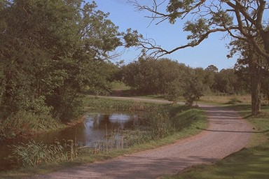
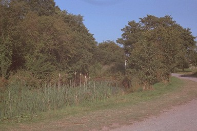
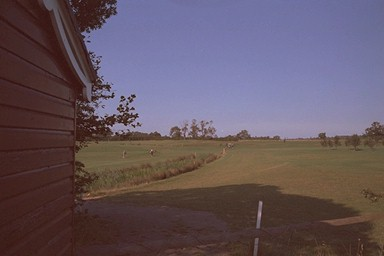

Within the grounds of the Golf Club, there is a short section of canal in water...
...which ends at the Blue Course...


...although traces can be made out across the links out of Telford and towards Hugh's Bridge and Lilleshall.